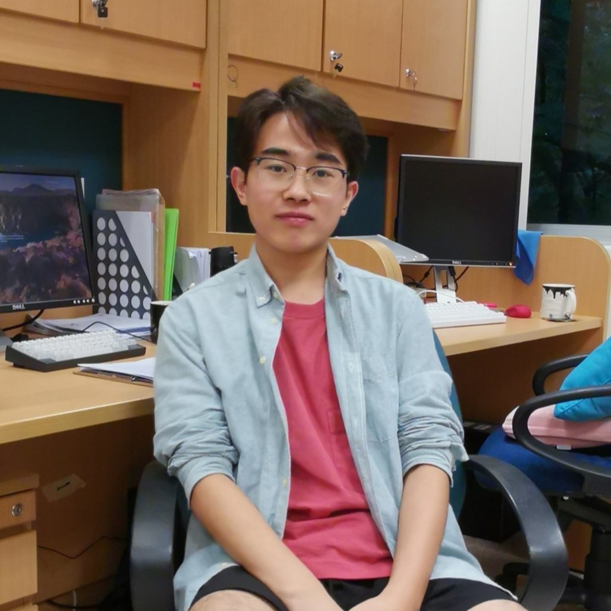

News
Mar. 2020
I was admitted into Ph.D. in Computer Science programme as a full-time student commencing in Aug. 2020, Singapore Management University .
|  |
Zhixin Ma
Research Intern
School of Computing
5 Prince George's Park, Singapore |
Zhixin Ma is a RA in National University of Singapore since Jan. 2019 and an incoming Ph.D. candidate in
Singapore Management University.
His research interests include Natural Language Processing and Multimedia.
Education
| Singapore Management University Ph.D. student in Computer Science Aug. 2020 - , Singapore Advisor: Prof. -- |
| Shandong University Bachelor in Computer Science and Technology Sept. 2015 - June 2019, Jinan and Qingdao Advisor: Prof. Tian Gan and Prof. Liqiang Nie |
Experiences
| Research Intern NExT++ Program, National University of Singapore Jan. 2019 - July 2020, Singapore Advisor: Dr. Wenqiang Lei and Prof. Tat-Seng Chua |
|
Research Assistant Intelligent Media Research Center, Shandong University Oct. 2017 - Nov. 2019, Qingdao Advisor: Prof. Tian Gan and Prof. Liqiang Nie |
Publications
In the Year of 2019:
| Learn to Gesture: Let Your Body Speak
Tian Gan, Zhixin Ma, Yuxiao Lu, Xuemeng Song and Liqiang Nie ACM MMAsia 2019 |
Honors
|
Meritorious Winner, Mathematical Contest In Modeling, Feb. 2017 Outstanding Student of Shandong University, Sep. 2016 |
Last update: April 2020. Webpage template borrows from Yongqi Li.